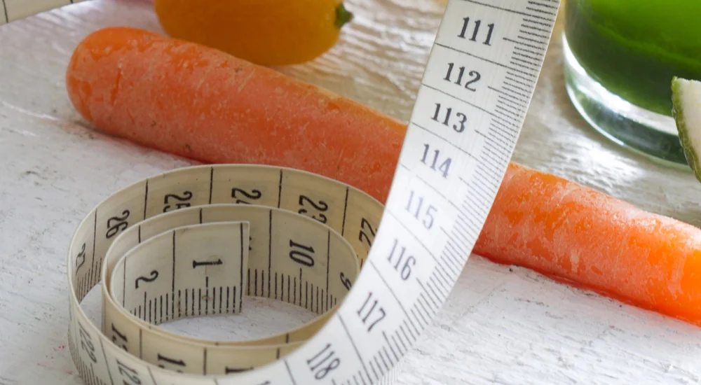

Die häufigsten Fehler beim Abnehmen vermeiden: so erreichst du deine Ziele

Entdecke die häufigsten Fehler beim Abnehmen und wie du sie vermeiden kannst!
Viele Menschen setzen sich unrealistische Ziele bzw. haben falsche Erwartungen, machen Fehler bei der Ernährung, vernachlässigen eine optimale Nährstoffversorgung und bewegen sich zu wenig, was den Abnehmerfolg gefährdet.
Mit den richtigen Vorgehensweisen erreichst du deine Ziele und deine Wunschfigur mit Leichtigkeit und kannst ein fitteres, vitaleres Leben führen. Lass uns gemeinsam an deiner Wunschfigur arbeiten! Ich als unabhängiger FitLine Vertriebspartner unterstütze zusammen mit meinem Team seit vielen Jahren erfolgreich Menschen jeden Alters beim Abnehmen. Wenn du nach einem fundierten und funktionierenden System suchst, könnte unser Programm zum Abnehmen genau das richtige für sich sein.
In diesem Blogartikel enthüllen wir die häufigsten Stolpersteine auf dem Weg zur Wunschfigur und zeigen dir, wie du sie mit Leichtigkeit umgehst. Du wirst erfahren, wie eine ausgewogene Ernährung, regelmäßige Bewegung und die richtige Unterstützung entscheidend sind, um deine Abnehmziele erfolgreich zu verwirklichen.
Die häufigsten Fehler beim Abnehmen
1. Unrealistische Erwartungen
Viele Menschen setzen sich unrealistische Ziele beim Abnehmen, was oft zu Frustration führt. Viele neigen dazu, ihre Erwartungen zu hoch zu stecken, was den Weg zur Wunschfigur erheblich erschwert.
Es ist wichtig, sich bewusst zu machen, dass der Abnehmprozess Zeit benötigt und kleine, erreichbare Ziele viel effektiver sind. Anstatt sich auf schnelle Ergebnisse zu konzentrieren, solltest du dir realistische Meilensteine setzen, die dich motivieren und dir helfen, auf Kurs zu bleiben.
Ein Beispiel könnte sein, innerhalb von zwei Monaten ein paar Kilo abzunehmen oder regelmäßige Bewegung in deinen Alltag zu integrieren. Solche realistischen Ziele fördern nicht nur die Motivation, sondern auch das Durchhaltevermögen.
Vergleiche dich nicht
Oft haben wir Kunden, die von einer Freundin z. B. gehört haben, dass sie in wenigen Wochen 10 kg verloren hat, und wollen dies dann auch. Sie vergessen dabei aber, dass jeder Körper anders ist, und es entscheidend für die Geschwindigkeit ist, mit welchen Voraussetzungen man gestartet ist.
Wenn du z. B. mit 100 kg anfängst, ist das Ziel, in wenigen Wochen 10 kg abzunehmen, vielleicht möglich und realistisch, wenn du mit 65 kg startest, ist das aber in der gleichen Zeit nicht möglich!
Solche falschen Erwartungen kosten dich enorm viel Frustration. Du denkst dann, dass das Abnehmen bei dir vielleicht nicht klappt, obwohl objektiv gesehen alles super läuft.
Vergleiche dich niemals mit anderen und gehe von monatlich kleinen Mengen an Gewichtsverlust aus. Bleibe lange dran, dann erreichst du dein Ziel mit Sicherheit!
2. Fehlende Nährstoffe und falsches Essen beim Abnehmen
Ein weiterer häufiger Fehler ist die Vernachlässigung der Nährstoffoptimierung während des Abnahmeprozesses.
Viele Menschen denken, dass sie einfach weniger essen müssen, um Gewicht zu verlieren. Dabei ist es entscheidend, dass dein Körper alle notwendigen Vitamine und Mineralien erhält, um leistungsfähig zu bleiben.
Eine ausgewogene Ernährung unterstützt nicht nur den Gewichtsverlust, sondern sorgt auch dafür, dass du dich energiegeladen und vital fühlst.
Im Rahmen einer optimalen Nährstoffversorgung können z. B. die FitLine Produkte unterstützen: Sie bieten eine einfache Möglichkeit, deine Nährstoffaufnahme zu verbessern. Mit Produkten wie dem Optimal-Set, das den PowerCocktail und Resto Mineralien beinhaltet, erhältst du viele wichtige essenzielle Nährstoffe, die du täglich benötigst, und das in köstlicher Form!
Falsche Diäten und einseitiges Essen
Viele neigen außerdem dazu, sich zu sehr einzuschränken, was langfristig nicht nachhaltig ist. Zu strenge Diäten führen oft dazu, dass du dich hungrig und unzufrieden fühlst. Dies führt auch zu Heißhunger und Fressattacken, sodass du deine Diät nach kurzer Zeit beenden wirst.
Klassische Fehler, die häufig gemacht werden, sind z. B. Mahlzeiten ganz wegzulassen, oder nur noch Gemüse und Salate zu essen! Mit fatalen Folgen!
Stattdessen solltest du eine ausgewogene Ernährung anstreben, die Genuss und Gesundheit vereint.
Ist dir die Sache mit der Ernährung zu kompliziert? Ein Shake als Mahlzeitenersatz bietet dir eine schmackhafte und nahrhafte Option für zwischendurch oder als Teil deiner täglichen Ernährung. So kannst du genießen und gleichzeitig deinem Ziel* näherkommen.
So isst du richtig:
Die richtige Zusammenstellung von Makronährstoffen ist entscheidend für erfolgreiches Abnehmen, ohne auf Genuss verzichten zu müssen! Achte darauf, eine ausgewogene Mischung bei jeder Mahlzeit von vor allem Fetten und Proteinen zu wählen.
Gesunde Kohlenhydrate aus Vollkornprodukten, Bohnen, Linsen und anderen Hülsenfrüchten, zuckerarmem Obst und Gemüse sollten die kleineren Mengen darstellen und können zeitweise auch mal ganz weggelassen werden, um das Abnehmen zu beschleunigen.
Gute Fette, wie sie in Nüssen, Avocados und hochwertigen Ölen vorkommen, sind wichtig und unterstützen auch ein normales Sättigungsgefühl.
Proteine sind ein besonders wichtiger Baustein beim Abnehmen, denn sie helfen dir, Muskeln aufzubauen und deinen Stoffwechsel anzukurbeln. Außerdem machen sie dich sehr satt.
Beim Abnehmen sollte jede Mahlzeit einen hohen Anteil an Eiweiß beinhalten. So wirst du satt, beugst Heißhunger und Gelüsten vor, und nimmst wie automatisch ab. Um die Eiweißaufnahme zu erleichtern, verwenden viele Menschen darum auch einfach Whey Eiweißpulver als Shakes oder Zusatz in einer Mahlzeit.
3. Mangelnde Bewegung als Fehler beim Abnehmen vermeiden
Ein weiterer häufiger Fehler beim Abnehmen ist die Vernachlässigung von Bewegung und körperlicher Aktivität. Regelmäßige Bewegung spielt eine entscheidende Rolle im Abnehmprozess; sie hilft nicht nur dabei, Kalorien zu verbrennen, sondern steigert auch dein allgemeines Wohlbefinden.
Bewegung steigert die Durchblutung, verbessert die Stimmung und hilft dir, Stress abzubauen. Selbst kleine Änderungen in deinem Alltag, wie ein Spaziergang in der Mittagspause oder das Treppensteigen statt des Aufzugs, können einen großen Unterschied machen.
Das Beste daran? Du musst nicht gleich ins Fitnessstudio rennen oder dich stundenlang quälen. Es gibt viele einfache Möglichkeiten, mehr Bewegung in deinen Alltag zu integrieren.
Die Rolle der Bewegung im Abnehmprozess
Durch körperliche Aktivität verbrennst du nicht nur Kalorien, sondern kurbelst auch deinen Stoffwechsel an.
Zudem stärkt regelmäßige Bewegung dein Herz-Kreislauf-System und trägt dazu bei, Muskeln aufzubauen, was wiederum deinen Grundumsatz erhöht. Wenn du mehr Muskeln hast, verbrennt dein Körper auch in Ruhe mehr Energie.
Es gibt viele verschiedene Arten von Bewegung, die du in deinen Alltag integrieren kannst. Ob Spazierengehen, Radfahren oder Tanzen: das Wichtigste ist, dass du etwas findest, das dir Spaß macht. So bleibst du motiviert und kannst die Bewegung langfristig in dein Leben einbauen.
Tipps für einfache Bewegungsroutinen
Um dir den Einstieg zu erleichtern, haben wir einige einfache Tipps für dich zusammengestellt:
- Setze dir kleine Ziele: Beginne mit kurzen Spaziergängen von 10 bis 15 Minuten pro Tag und steigere die Dauer allmählich.
- Nutze jede Gelegenheit: Nimm die Treppe statt des Aufzuges oder parke weiter weg vom Eingang, um ein paar zusätzliche Schritte zu sammeln.
- Integriere Bewegung in deinen Alltag: Plane feste Zeiten für Bewegung ein, sei es morgens vor der Arbeit oder abends nach dem Essen. Am besten ist, wenn du eine kleine Bewegungseinheit an eine bestehende Routine anschließt. Z. B. morgens direkt nach dem Zähneputzen 20 Kniebeugen zu machen, und abends das Gleiche zu tun. Diese kleinen Änderungen bewirken über die tägliche Routine mehr, als du denkst.
- Finde einen Trainingspartner: Gemeinsam macht das Training mehr Spaß und motiviert dich, dranzubleiben.
- Probiere neue Aktivitäten aus: Melde dich für einen Tanzkurs oder eine Yoga-Stunde an. So bringst du Abwechslung in deine Routine.
Die Bedeutung von Sport für Abnehmen und Wohlbefinden
Regelmäßige körperliche Aktivität und Sport können dazu beitragen, Stress abzubauen und deine Stimmung zu heben. Wenn du dich bewegst, schüttet dein Körper Endorphine aus. Das sind Hormone, die dir ein Glücksgefühl vermitteln. Außerdem verbessert Bewegung deinen Schlaf und sorgt dafür, dass du dich tagsüber fitter und energiegeladener fühlst.
Dies sind alles Faktoren, die indirekt auch auf das Abnehmen wirken!
Denn zu hohe Stresshormone und Schlafmangel können das Abnehmen stark erschweren oder ganz verhindern.
Es ist wichtig zu betonen, dass jeder Schritt zählt! Egal, wie klein er auch sein mag, jede Form der Bewegung bringt dich deinem Ziel näher und hilft dir, die Fehler beim Abnehmen zu vermeiden.
Um die Motivation aufrechtzuerhalten, solltest du darauf achten, dass deine Bewegungsroutine Spaß macht. Überlege dir Aktivitäten, die dir Freude bereiten und die du gerne machst. Je mehr Freude du an der Bewegung hast, desto eher wird sie zur Gewohnheit und damit zu einem festen Bestandteil deines Lebens.
Denke daran: Es geht nicht nur um das Abnehmen! Es geht darum, einen aktiven Lebensstil zu pflegen und das Beste aus deinem Körper herauszuholen. Wenn du regelmäßig in Bewegung bleibst und dabei auf deinen Körper hörst, wirst du nicht nur fitter werden, sondern auch mehr Lebensfreude erfahren.
Im nächsten Abschnitt werden wir uns mit emotionalen Essgewohnheiten beschäftigen und untersuchen, wie sie deinen Abnehmerfolg erheblich beeinträchtigen können.
4. Emotionale Essgewohnheiten beim Abnehmen
Emotionale Essgewohnheiten können den Abnehmerfolg erheblich beeinträchtigen. Viele Menschen neigen dazu, in stressigen oder emotional belastenden Situationen mehr zu essen, ohne sich dessen bewusst zu sein. Oftmals wird Essen als eine Art Bewältigungsmechanismus verwendet, um mit Stress, Langeweile oder Traurigkeit umzugehen.
Aber diese Gewohnheiten können dazu führen, dass du mehr isst, als dein Körper tatsächlich benötigt, und somit deine Abnehmziele gefährdest. Es ist wichtig, zu erkennen, wann du aus emotionalen Gründen isst und wie du diesen Kreislauf durchbrechen kannst.
Essen ist nicht nur eine physische Notwendigkeit; es hat auch eine starke emotionale Komponente.
Wenn du beispielsweise einen langen Arbeitstag hattest oder dich unwohl fühlst, kann es verlockend sein, dir etwas zu gönnen, um dich besser zu fühlen. Diese Art des Essens geschieht oft unbewusst und führt dazu, dass du mehr Kalorien konsumierst, als du tatsächlich brauchst. Ein häufiges Beispiel ist das Naschen von Süßigkeiten oder Snacks beim Fernsehen, das ist eine Gewohnheit, die viele Menschen entwickeln.
Um diese emotionalen Essgewohnheiten zu durchbrechen, ist es hilfreich, sich der eigenen Gefühle bewusst zu werden.
Frage dich: Esse ich aus Hunger oder aus einem anderen Grund? Versuche, ein Ernährungstagebuch zu führen, in dem du notierst, was du isst und wie du dich dabei fühlst. Dadurch bekommst du ein besseres Verständnis für deine Essmuster und kannst gezielt daran arbeiten.
Übrigens: wenn du innovative Unterstützungen fürs Abnehmen¹ suchst, schau dir gern einmal das sensationelle Produkt TopShape¹ an. (¹Biotin trägt zu einem normalen Makronährstoffwechsel bei und Zink trägt zu einem normalen Fettsäurestoffwechsel bei.)
Strategien zur besseren Kontrolle über Essgewohnheiten
Um bewusster mit Essen umzugehen und emotionale Essgewohnheiten zu vermeiden, gibt es verschiedene Strategien, die dir helfen können:
- Achtsamkeit üben: Achtsamkeitspraktiken können dir helfen, im Moment präsent zu sein und deine Emotionen besser wahrzunehmen. Nimm dir Zeit, um dein Essen wirklich zu genießen und achte auf die Signale deines Körpers.
- Alternativen finden: Wenn du das Bedürfnis verspürst, aus emotionalen Gründen zu essen, suche nach Alternativen. Gehe spazieren, rufe einen Freund an oder mache eine kurze Meditation. Finde Aktivitäten, die dir helfen, deine Emotionen auf gesunde Weise zu verarbeiten.
- Gesunde Snacks bereithalten: Wenn du das Gefühl hast, naschen zu müssen, halte gesunde Snacks wie Obst oder Gemüse bereit. So kannst du deinen Hunger stillen, ohne auf ungesunde Optionen zurückzugreifen.
- Emotionen identifizieren: Lerne deine Emotionen besser kennen und finde heraus, welche Auslöser dich zum Essen verleiten. Indem du diese Auslöser erkennst, kannst du Strategien entwickeln, um damit umzugehen.
- Unterstützung suchen: Manchmal kann es hilfreich sein, Unterstützung von Freunden oder Familie in Anspruch zu nehmen. Sprich offen über deine Herausforderungen und bitte um Hilfe bei der Umsetzung gesunder Gewohnheiten.
Die Rolle von Nährstoffen und Nahrungsergänzung
Die Integration von guten Nahrungsergänzungsmitteln in deinen Alltag kann ebenfalls helfen, emotionale Essgewohnheiten positiv zu beeinflussen. Mit der richtigen Nährstoffoptimierung fühlst du dich besser! Das kann dazu beitragen, dass du weniger geneigt bist, aus emotionalen Gründen zu essen.
Oftmals verschwinden dann auch Gelüste und Heißhunger, weil dein Gehirn erkannt hat, dass du ausreichend Nährstoffe aufgenommen hast.
Indem du deine Ernährung optimierst und gleichzeitig an deiner emotionalen Beziehung zum Essen arbeitest, schaffst du eine solide Grundlage für deinen Abnehmerfolg. Du wirst feststellen, dass es einfacher wird, deine Ziele zu erreichen und ein gutes Verhältnis zum Essen aufzubauen.
Im nächsten Abschnitt werden wir die Bedeutung von sozialer Unterstützung beim Abnehmen beleuchten und wie sie dir helfen kann, auf Kurs zu bleiben und deine Ziele erfolgreich umzusetzen.
5. Fehlende Unterstützung
Die Bedeutung von sozialer Unterstützung wird oft unterschätzt, wenn es um das Abnehmen geht. Viele Menschen glauben, dass sie ihren Weg zur Wunschfigur allein gehen müssen, doch in Wirklichkeit kann eine unterstützende Gemeinschaft den Unterschied zwischen Erfolg und Misserfolg ausmachen.
Wenn du dich auf deiner Reise zum Abnehmen von anderen umgeben fühlst, die ähnliche Ziele haben oder dich ermutigen, steigert das nicht nur deine Motivation, sondern hilft dir auch, Rückschläge besser zu bewältigen.
Die Rolle von sozialer Unterstützung
Soziale Unterstützung kann in vielen Formen auftreten: von Freunden und Familie bis hin zu Online-Communitys oder Selbsthilfegruppen.
Diese Netzwerke bieten nicht nur emotionale Unterstützung, sondern auch praktische Tipps und Ratschläge. Wenn du beispielsweise mit jemandem sprichst, der ähnliche Herausforderungen beim Abnehmen durchlebt hat, kannst du wertvolle Einsichten gewinnen und neue Strategien entwickeln. Diese Art der Interaktion fördert ein Gefühl der Zugehörigkeit und kann dir helfen, dich weniger isoliert zu fühlen.
Wir bieten im Rahmen unseres Abnehm-Programms z. B. persönliche Unterstützung und eine Online-Gruppe an. In solchen Gruppen kannst du Gleichgesinnte treffen, die dich inspirieren und motivieren. Ihr könnt eure Fortschritte teilen, Rezepte austauschen und euch gegenseitig anfeuern. Es ist erstaunlich, wie viel einfacher es ist, gesunde Entscheidungen zu treffen, wenn du von anderen umgeben bist, die das gleiche Ziel verfolgen.
Tipps zur Schaffung eines unterstützenden Umfelds
Um ein unterstützendes Umfeld zu schaffen, gibt es verschiedene Ansätze:
- Teile deine Ziele: Sprich offen über deine Abnehmziele mit Freunden und Familie. Wenn sie wissen, was du erreichen möchtest, können sie dich besser unterstützen und ermutigen.
- Such dir einen Trainingspartner: Ein Freund oder Bekannter kann dir helfen, motiviert zu bleiben. Gemeinsam zu trainieren macht nicht nur mehr Spaß, sondern sorgt auch dafür, dass du Verantwortung übernimmst.
- Nutze soziale Medien: Trete Online-Gruppen bei oder folge Influencern, die sich mit gesundem Essen und Fitness beschäftigen. Diese Plattformen bieten oft wertvolle Tipps und inspirierende Geschichten von Menschen, die erfolgreich abgenommen haben.
- Biete Unterstützung an: Manchmal kannst du auch selbst eine Quelle der Unterstützung sein. Indem du anderen hilfst oder sie ermutigst, stärkst du nicht nur deren Motivation, sondern auch deine eigene.
- Erwäge professionelle Hilfe: Eine kostenlose Beratung und Begleitung durch uns kann ebenfalls eine wertvolle Unterstützung sein. Hier erhältst du maßgeschneiderte Tipps zur Nährstoffoptimierung und zur Integration gesunder Gewohnheiten in deinen Alltag.
Die Vorteile von Unterstützung beim Abnehmen
Die Vorteile einer unterstützenden Gemeinschaft sind vielfältig. Studien zeigen, dass Menschen mit sozialer Unterstützung eher ihre Abnehmziele erreichen als solche, die alleine arbeiten.
Wenn du beispielsweise Herausforderungen hast oder einen Rückfall erlebst, kann es sehr hilfreich sein, mit jemandem darüber zu sprechen. Diese Unterstützung kann dir helfen, wieder auf den richtigen Weg zu kommen und deine Ziele nicht aus den Augen zu verlieren.
Es ist wichtig zu betonen, dass jeder Mensch anders ist und unterschiedliche Arten von Unterstützung benötigt. Finde heraus, was für dich am besten funktioniert und scheue dich nicht davor, Hilfe anzunehmen oder nach Unterstützung zu suchen.
Im nächsten Abschnitt werden wir uns mit dem Thema Ungeduld und fehlende Fortschrittskontrolle auseinandersetzen und untersuchen, wie wichtig es ist, den eigenen Fortschritt regelmäßig zu überprüfen und kleine Erfolge zu feiern.
6. Ungeduld und fehlende Fortschrittskontrolle als Fehler beim Abnehmen
Ungeduld kann ein großer Hemmschuh beim Abnehmen sein, wenn Fortschritte nicht sofort sichtbar sind.
Viele Menschen erwarten schnelle Ergebnisse und verlieren schnell die Motivation, wenn diese ausbleiben. Es ist wichtig zu verstehen, dass der Abnehmprozess Zeit braucht und jeder Körper anders reagiert.
Anstatt sich auf die Waage zu fixieren, solltest du den Fokus auf deine Fortschritte und kleine Erfolge legen. Ein effektiver Weg, um deine Fortschritte zu kontrollieren, ist das Führen eines Ernährungstagebuchs.
Hier kannst du nicht nur deine Mahlzeiten dokumentieren, sondern auch deine Gefühle und Aktivitäten festhalten. Dies hilft dir, Muster zu erkennen und deine Gewohnheiten besser zu verstehen.
Die Bedeutung der Fortschrittskontrolle und kleine Erfolge feiern
Die Kontrolle über deinen Fortschritt ist entscheidend für den Erfolg beim Abnehmen. Viele Menschen machen den Fehler beim Abnehmen, sich ausschließlich auf das Gewicht zu konzentrieren.
Dabei gibt es viele andere Faktoren, die deinen Erfolg beeinflussen können. Möglicherweise verlierst du Fett, während du gleichzeitig Muskeln aufbaust, was dazu führen kann, dass die Waage nicht so schnell sinkt, wie du es dir wünschst.
Stattdessen solltest du auch andere Indikatoren wie Körpermaße, Fitnesslevel oder dein allgemeines Wohlbefinden in Betracht ziehen. Diese ganzheitliche Betrachtung gibt dir ein klareres Bild von deinem Fortschritt und motiviert dich weiterhin.
Es ist wichtig, kleine Erfolge zu feiern, um die Motivation hochzuhalten. Vielleicht hast du eine Woche lang regelmäßig Sport gemacht oder erfolgreich gesunde Snacks gewählt. Diese kleinen Schritte sind entscheidend für deinen langfristigen Erfolg und sollten anerkannt werden.
Du könntest dir eine Belohnung gönnen, z. B. mit einem neuen Sportanzug oder mit einem entspannenden Bad. Durch das Feiern dieser Erfolge schaffst du eine positive Rückkopplungsschleife, die dich anspornt, weiterzumachen.
Strategien zur Überwachung des Fortschritts beim Abnehmen
Um deinen Fortschritt effektiv zu überwachen, gibt es einige Strategien, die dir helfen können:
- Wöchentliche Wiege-Termine: Setze einen festen Tag in der Woche fest, an dem du dich wiegst. So vermeidest du tägliche Schwankungen, die frustrierend sein können.
- Körpermaße nehmen: Miss regelmäßig deinen Bauchumfang, Hüftumfang und andere Körpermaße. Oft siehst du hier schneller Fortschritte als auf der Waage.
- Fitnessziele setzen: Setze dir spezifische Ziele im Hinblick auf körperliche Aktivitäten. Zum Beispiel kannst du dir vornehmen, eine bestimmte Anzahl von Schritten pro Tag zu gehen oder eine neue Sportart auszuprobieren.
- Fotodokumentation: Halte deinen Fortschritt durch Fotos fest. Ein Bild sagt mehr als tausend Worte und zeigt dir visuell die Veränderungen deines Körpers im Laufe der Zeit.
- Achtsamkeit und Reflexion: Nimm dir regelmäßig Zeit für eine Selbstreflexion über deine Ernährung und dein Verhalten. Überlege, was gut gelaufen ist und wo es noch Raum für Verbesserungen gibt.
Fazit: die häufigsten Fehler beim Abnehmen vermeiden
Es ist an der Zeit, die häufigsten Fehler beim Abnehmen hinter dir zu lassen und mit neuen Strategien durchzustarten!
Zusammenfassend lässt sich sagen, dass die häufigsten Stolpersteine auf dem Weg zur Wunschfigur leicht vermieden werden können, wenn du dir der Herausforderungen bewusst bist und proaktiv daran arbeitest.
Unrealistische Erwartungen sind oft der Anfang vom Ende; setze dir stattdessen erreichbare Ziele, die dich motivieren und dir helfen, auf Kurs zu bleiben.
Eine gute Nährstoffaufnahme spielt eine entscheidende Rolle: mit der richtigen Ernährung und eventuellen Nährstoff-Produkten kannst du sicherstellen, dass dein Körper alle notwendigen Vitamine und Mineralien erhält, um vital zu bleiben.
Vergiss nicht, dass eine ausgewogene Ernährung nicht aus strengen Diäten besteht, sondern auch Genuss umfasst. Der FitLine Shake als Mahlzeitenersatz ist eine köstliche Lösung, die dir hilft, deine Abnehmziele* zu erreichen, ohne auf den Genuss verzichten zu müssen.
Außerdem ist Bewegung unerlässlich: Nutze jede Gelegenheit, um aktiv zu sein und integriere einfache Bewegungsroutinen in deinen Alltag.
Emotionale Essgewohnheiten können ebenfalls ein Hindernis darstellen. Sei achtsam und finde gesunde Alternativen, um mit Stress umzugehen.
Vergiss nicht, wie wichtig soziale Unterstützung ist: Umgib dich mit Menschen, die dich motivieren und ermutigen.
Und schließlich: Sei geduldig mit dir selbst! Der Abnehmprozess braucht Zeit. Feiere kleine Erfolge und halte deinen Fortschritt fest.
Du bist nicht allein auf diesem Weg; lass dich von uns inspirieren und unterstützen
Entscheide dich jetzt, deine Ernährung, deine Figur und dein Leben zu optimieren, denn du verdienst ein Leben voller Energie, Vitalität und Lebensfreude! In unserem Abnehmprogramm berücksichtigen wir alle wichtigen Faktoren, sodass du die häufigsten Fehler beim Abnehmen vermeiden und deine Ziele erreichen kannst.
Kontaktiere uns für eine kostenlose Beratung zum Abnehmen und informiere dich über unser ganzheitliches Abnehmprogramm, um noch heute den ersten Schritt in ein neues Leben zu machen!
*Das Ersetzen von zwei der täglichen Hauptmahlzeiten im Rahmen einer kalorienarmen Ernährung durch einen solchen Mahlzeitersatz trägt zu Gewichtsabnahme bei.